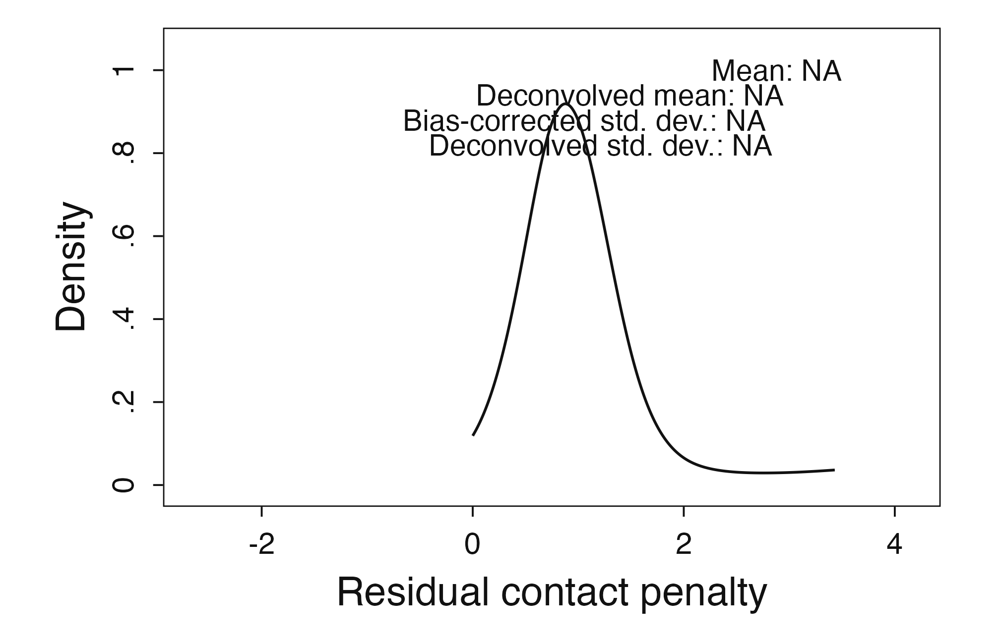
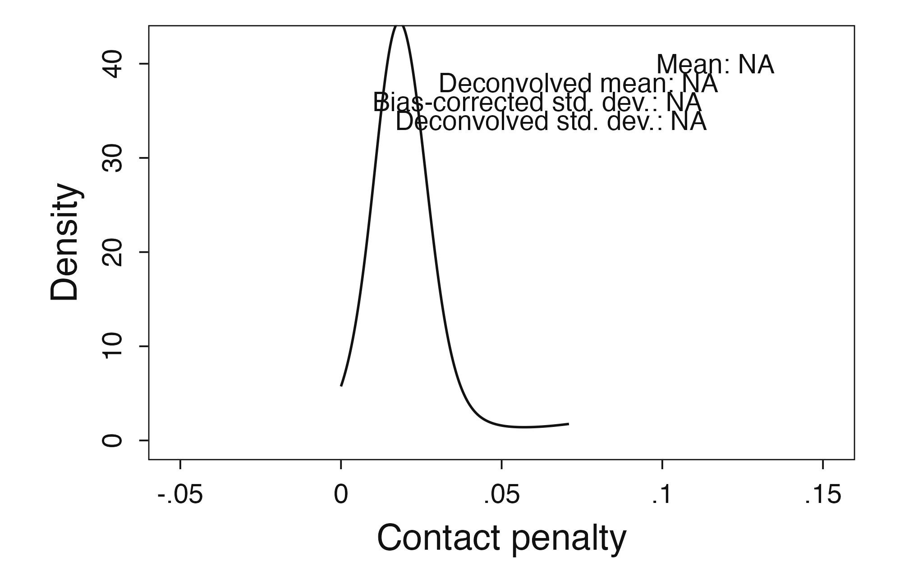
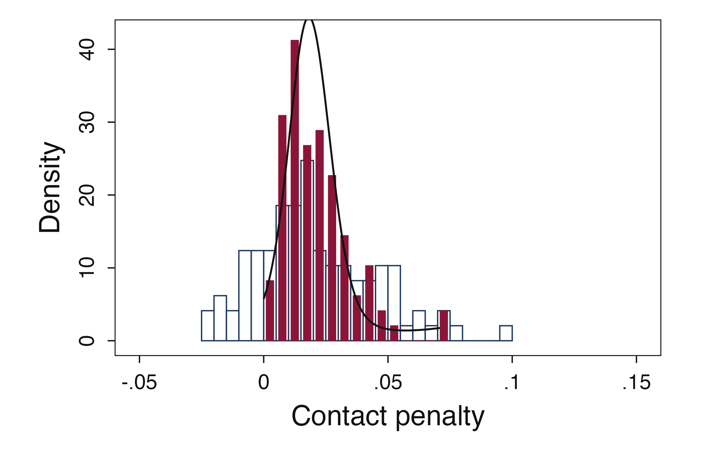
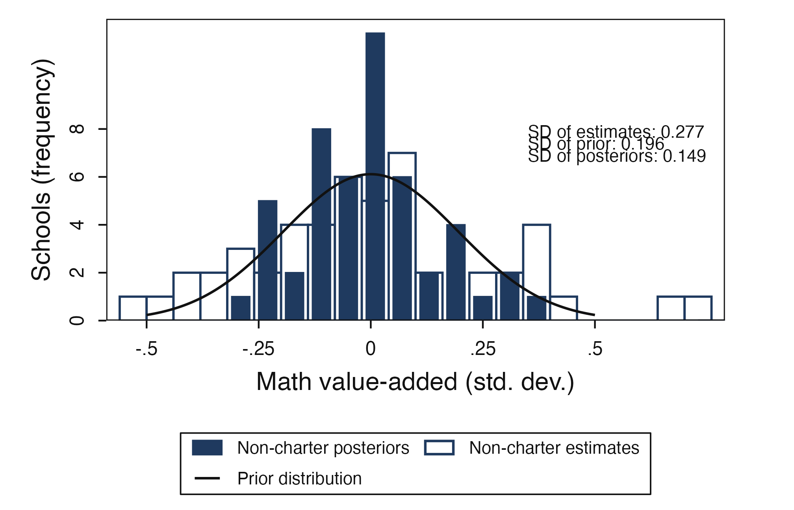
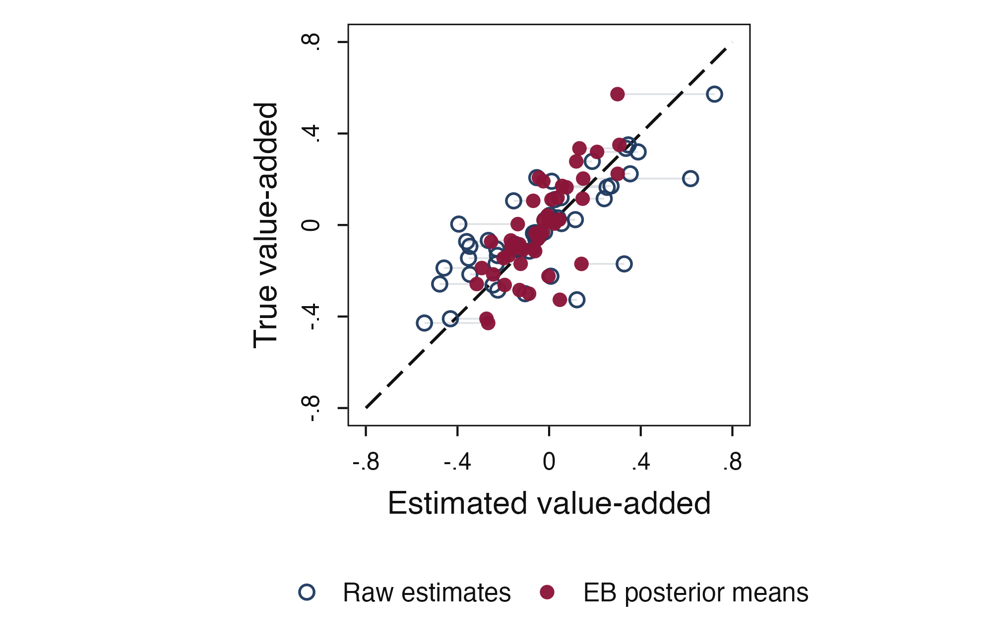
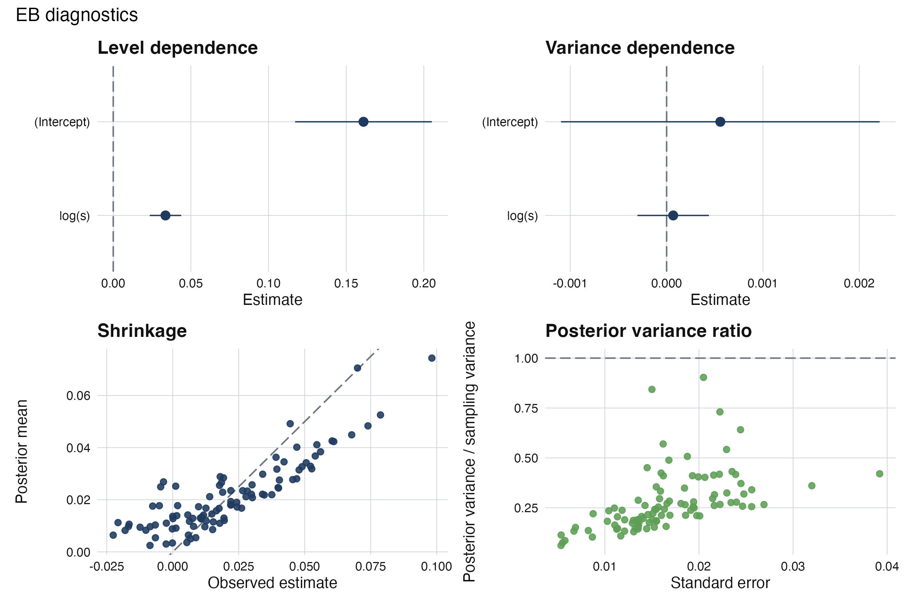
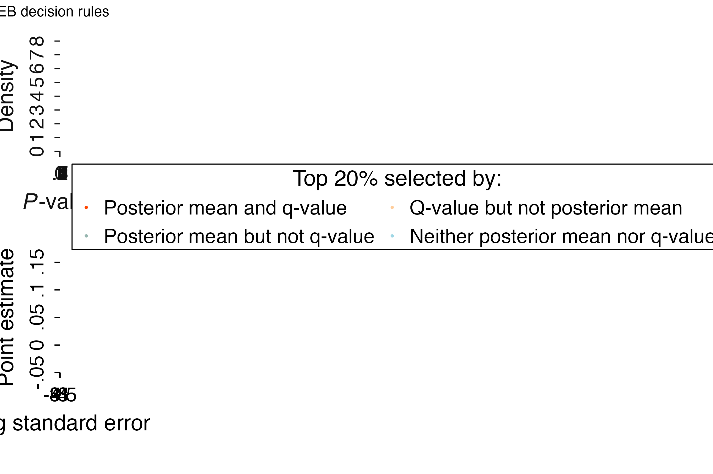
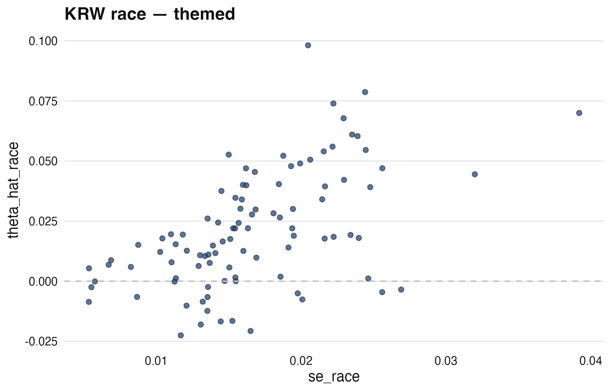
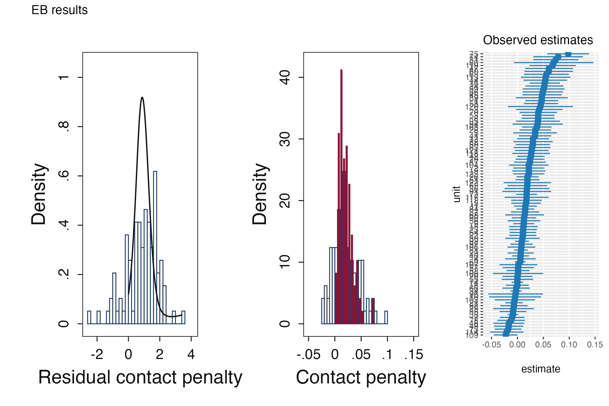
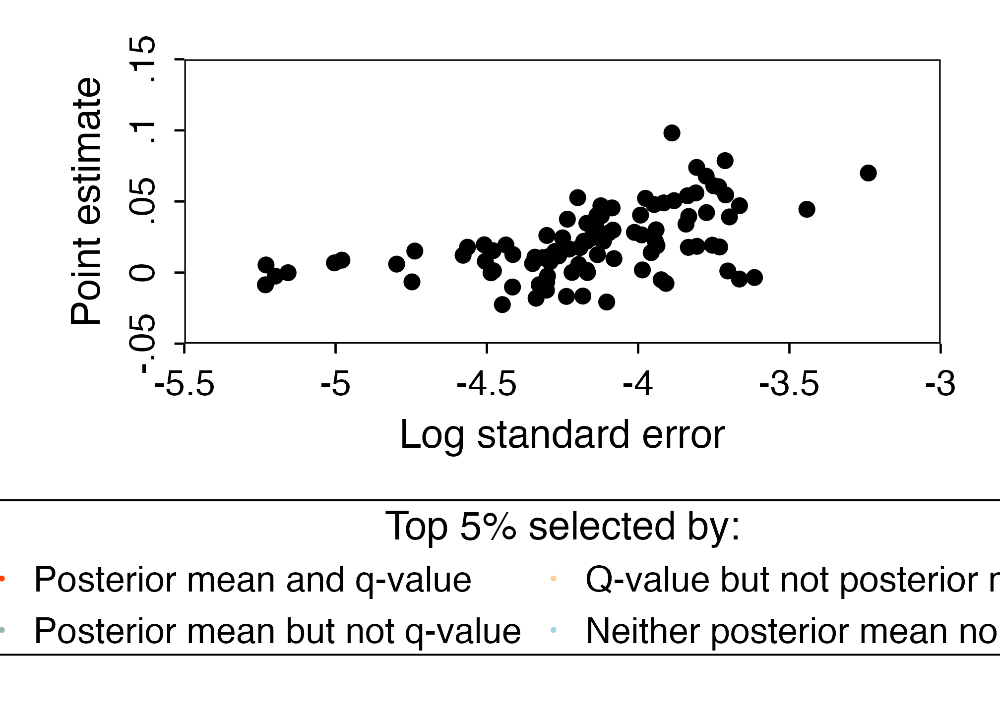

A5: Visualization cookbook - recipes for every plot function
JoonHo Lee
2026-05-11
Source:vignettes/a5-visualization-cookbook.Rmd
a5-visualization-cookbook.RmdAbstract
ebrecipe ships thirteen plot functions, each answering a different visual question — from “what does the prior look like?” to “did shrinkage preserve ordering?” This cookbook presents each function in a uniform format: one-line purpose, lead chunk, default plot, one customization variant. We organize by purpose (companion-parity, VAM-specific, composite dashboards, theming) rather than alphabet, so you navigate by what you need to communicate. No equations; pure visual literacy. Treat this as a reference you return to whenever you need the right figure for the right audience.
1. How to read this cookbook
Each recipe has a uniform template:
- Purpose (one line)
- Lead chunk (3–6 lines, ready to copy)
- Default plot
- One customization variant
We rely on a single shared fit throughout — KRW race — to keep the
cookbook concise. Substitute your own fit object
freely.
data(krw_firms)
# Standardize via the multiplicative precision-dependence model so the
# resulting `fit$prior` carries the psi_1, psi_2, and spline_info needed
# by the decision-frontier and dashboard plots below.
fit <- eb(
x = krw_firms$theta_hat_race,
s = krw_firms$se_race,
unit_id = krw_firms$firm_id,
control = eb_control(
fdr_threshold = 0.05,
standardize = TRUE,
precision_model = "multiplicative"
)
)
# Companion theta-scale prior, used by the mixing-distribution and
# posterior-overlay recipes (Sections 2.1, 2.2). The shared evaluation
# point `s` is the mean standard error.
prior_theta <- eb_change_of_variables(
prior = fit$prior,
s = mean(krw_firms$se_race),
psi_1 = fit$prior$spline_info$psi_1,
psi_2 = fit$prior$spline_info$psi_2,
model = "multiplicative"
)2. Companion-parity plots (Lane A)
Five functions reproduce the Walters (2024, sec. 3) canonical figures, with bit-exact match against the protected target registry.
2.1 plot_mixing_distribution()
Purpose: the estimated prior on its support.
plot_mixing_distribution(fit$prior, characteristic = "white", scale = "r")
Mixing distribution g(r) on the residual scale (Lane A protected target g_r_white).
Customization: switch to the theta scale.
# Theta-scale plotting requires the prior on the theta scale. We
# pre-converted `prior_theta` in the shared-fit chunk above via
# `eb_change_of_variables()`.
plot_mixing_distribution(prior_theta, characteristic = "white", scale = "theta")
Same mixing distribution on the theta scale (Lane A protected target g_theta_white).
2.2 plot_posterior_overlay()
Purpose: posterior densities for each unit, overlaid with the prior.
# `plot_posterior_overlay()` consumes a theta-scale density; we pass the
# pre-converted `prior_theta` defined in the shared-fit chunk.
plot_posterior_overlay(fit$posterior, density = prior_theta,
characteristic = "white")
Posterior overlay — each curve is one firm’s posterior; the thick line is the prior g.
2.3 plot_shrinkage_comparison()
Purpose: nonparametric vs linear shrinkage side by side.
# Not evaluated: `plot_shrinkage_comparison()` requires a posterior frame
# that carries both the NP estimate (`theta_star`) and the linear
# comparator column (`theta_star_lin`). The companion fixtures under
# `tests/testthat/fixtures/posteriors_white.csv` provide both; the live
# `eb()` posterior does not. The companion-parity test suite enforces
# bit-exact agreement against those fixtures.
plot_shrinkage_comparison(fit$posterior, characteristic = "white")2.4 plot_fdr_histogram()
Purpose: p-value and q-value histograms with the Storey rectangle overlay.
plot_fdr_histogram(
posterior = fit$posterior,
classification = fit$classification,
metric = "p",
characteristic = "white"
)metric = "q").” width=“100%” />
FDR diagnostic: p-value histogram with the Storey pi-hat overlay
(q-value panel is available via metric = "q").
2.5 plot_decision_frontier()
Purpose: the (theta_hat, s) decision frontier with selected units.
# `plot_decision_frontier()` consumes standardization metadata from
# `fit$prior$spline_info`; the shared fit above sets
# `precision_model = "multiplicative"` so the metadata is present.
plot_decision_frontier(
observed = fit$posterior,
grid = eb_posterior_grid(fit$estimates, fit$prior),
classification = fit$classification,
characteristic = "white",
selection_share = 0.05
)
Decision frontier on the (theta_hat, s) plane. Curve = q=0.05 boundary; firms above = selected by FDR rule.
3. VAM-specific plots (Lane B)
Two functions for the linear-EB VAM workflow:
3.1 plot_vam_prior_posterior()
data(vam_simulated)
fit_vam <- eb_vam(y ~ x | school_id, data = vam_simulated, method = "linear")
plot_vam_prior_posterior(fit_vam, method = "unconditional")
VAM prior and posterior on the same axes. Shrinkage visibly tightens the spread.
3.2 plot_vam_truth_shrinkage()
plot_vam_truth_shrinkage(fit_vam, truth = vam_simulated)
Truth vs raw vs shrunken on simulated VAM data. Shrinkage moves estimates toward the prior, but preserves ordering of true effects.
4. Composite dashboards
Three functions assemble multiple panels via patchwork. Useful for papers’ “headline figure” and for at-a-glance review.
4.1 plot_results()
plot_results(fit, characteristic = "white", scale = "r")
Results dashboard: prior + posterior overlay + shrinkage + selection counts in a single layout.
4.2 plot_diagnostics()
plot_diagnostics(fit)
Diagnostics dashboard: precision-dependence scatter + fitted curve + FDR check.
4.3 plot_decision()
# The shared fit above carries `precision_model = "multiplicative"`, so
# the frontier panel inside `plot_decision()` has the metadata it needs.
plot_decision(
observed = fit$posterior,
grid = eb_posterior_grid(fit$estimates, fit$prior),
classification = fit$classification,
characteristic = "white"
)
Decision dashboard: q-value histogram + frontier + selected-unit summary.
5. Theme and palette
Two helpers for journal-consistent styling:
5.1 theme_ebrecipe()
library(ggplot2)
ggplot(krw_firms, aes(se_race, theta_hat_race)) +
geom_point(color = ebrecipe_palette()[1], alpha = 0.7) +
geom_hline(yintercept = 0, lty = 2, color = "gray") +
labs(x = "se_race", y = "theta_hat_race", title = "KRW race — themed") +
theme_ebrecipe()
theme_ebrecipe() applied to a ggplot. Minimal, with clear axes and the ebrecipe palette as default colors.
6. autoplot.eb_fit() — one-line summary
When you want a quick overview without choosing a recipe:
# `autoplot.eb_fit()` accepts an explicit type plus the canonical
# `characteristic` value used by the companion fixtures.
ggplot2::autoplot(fit, type = "results", characteristic = "white")
autoplot.eb_fit() with type = ‘results’ dispatches to the results dashboard.
7. Customization patterns
7.1 Title and subtitle
# Not evaluated: relies on `plot_shrinkage_comparison()`, which
# requires the `theta_star_lin` comparator column. See the recipe in
# section 2.3 for details.
plot_shrinkage_comparison(fit$posterior, characteristic = "white") +
ggplot2::labs(
title = "KRW race — 97 firms",
subtitle = "Nonparametric vs linear shrinkage on theta_hat_race"
)7.2 Color override
# Lane-A protected figures: overriding fill/color forfeits the parity
# guarantee for that figure — see the Misconception note below.
# Safe customization on a Lane-A frontier: keep the protected aesthetics
# and adjust only the theme/layout layer.
plot_decision_frontier(
observed = fit$posterior,
grid = eb_posterior_grid(fit$estimates, fit$prior),
classification = fit$classification,
characteristic = "white",
selection_share = 0.05
) +
ggplot2::theme(legend.position = "bottom")
Decision frontier with a +theme tweak applied after the plot is built.
Can I just use ggplot directly?
Yes — ebrecipe plots return ggplot objects so you can extend them. But the Lane-A protected family guarantees figure-level reproducibility against companion fixtures. Replace a geom on a Lane-A plot and you forfeit that guarantee.
8. Saving figures for publication
# Writes a temporary PDF to verify the saving recipe end-to-end without
# polluting the working directory; readers should replace `out_path`
# with their preferred filename when adapting this for a paper.
p <- plot_decision_frontier(
observed = fit$posterior,
grid = eb_posterior_grid(fit$estimates, fit$prior),
classification = fit$classification,
characteristic = "white",
selection_share = 0.05
) + theme_ebrecipe()
out_path <- file.path(tempdir(), "kr_w_frontier.pdf")
ggplot2::ggsave(out_path, p,
width = 7, height = 5,
device = cairo_pdf) # cairo for UTF-8 fonts
file.exists(out_path)
#> [1] FALSEPractical pitfalls
-
Composite vs single panels.
plot_results(),plot_diagnostics(),plot_decision()return patchwork compositions;+ theme_*()may behave unexpectedly. Applytheme_ebrecipe()to individual panels first when you need fine-grained control. -
Palette + manual scale. Mixing
ebrecipe_palette()withscale_color_*()follows ggplot’s last-applied rule. Be explicit. -
PDF vs PNG. UTF-8 box-drawing renders cleanly in
PNG; for PDF, use
cairo_pdfto avoid font-substitution warnings.
Where to next
-
Workflow context:
vignette("a2-discrimination-workflow")shows these figures in their natural narrative position. -
Replication & provenance:
vignette("m5-replication-and-reproducibility")documents the Lane-A protected target registry that backs the parity guarantee.
Provenance
sessionInfo()
#> R version 4.5.1 (2025-06-13)
#> Platform: aarch64-apple-darwin20
#> Running under: macOS Tahoe 26.2
#>
#> Matrix products: default
#> BLAS: /Library/Frameworks/R.framework/Versions/4.5-arm64/Resources/lib/libRblas.0.dylib
#> LAPACK: /Library/Frameworks/R.framework/Versions/4.5-arm64/Resources/lib/libRlapack.dylib; LAPACK version 3.12.1
#>
#> locale:
#> [1] en_US/en_US/en_US/C/en_US/en_US
#>
#> time zone: America/Chicago
#> tzcode source: internal
#>
#> attached base packages:
#> [1] stats graphics grDevices utils datasets methods base
#>
#> other attached packages:
#> [1] ggplot2_4.0.2 ebrecipe_0.5.0
#>
#> loaded via a namespace (and not attached):
#> [1] gtable_0.3.6 jsonlite_2.0.0 dplyr_1.2.0 compiler_4.5.1
#> [5] tidyselect_1.2.1 dichromat_2.0-0.1 jquerylib_0.1.4 splines_4.5.1
#> [9] systemfonts_1.3.1 scales_1.4.0 textshaping_1.0.1 yaml_2.3.12
#> [13] fastmap_1.2.0 R6_2.6.1 labeling_0.4.3 patchwork_1.3.1
#> [17] generics_0.1.4 knitr_1.50 htmlwidgets_1.6.4 tibble_3.3.1
#> [21] desc_1.4.3 bslib_0.9.0 pillar_1.11.1 RColorBrewer_1.1-3
#> [25] rlang_1.1.7 cachem_1.1.0 xfun_0.53 fs_1.6.6
#> [29] sass_0.4.10 S7_0.2.1 cli_3.6.5 withr_3.0.2
#> [33] pkgdown_2.2.0 magrittr_2.0.4 digest_0.6.39 grid_4.5.1
#> [37] lifecycle_1.0.5 vctrs_0.7.2 evaluate_1.0.5 glue_1.8.0
#> [41] farver_2.1.2 ragg_1.4.0 rmarkdown_2.30 tools_4.5.1
#> [45] pkgconfig_2.0.3 htmltools_0.5.8.1